Candidate List 20260531 Previous Day Next Day Section 1: New Sources (age<1d) Cosmological Afterglow
Section 2: Old (1-5d) sources observed last night placeholder
Section 1: New Afterglow/FBOT Cands Last Night (0)
Section 2: Older Sources Observed Last Night (10)
0. ZTF26aayixka (Afterglow?) [Back to Top] [Share] [Trigger Swift] [Fritz ] [Lasair ]RA, Dec: 235.74321, -2.11793 15h42m58.37s, -2d-7m-4.56sGalactic (l, b): 4.59208, 39.40733 ext(g-r) = 0.174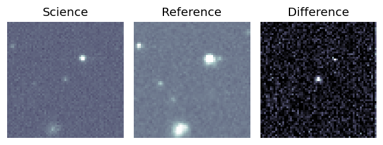
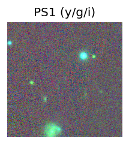
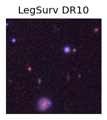
LegacySurvey: 1 sources in 3 arcsec Closest: d = 0.11 arcsec, 316.4 deg (east of north) photoz=0.83 (68% bounds 0.24, 1.38), type=PSF peak abs mag = -28.24 (68% bounds -25.06, -29.61) 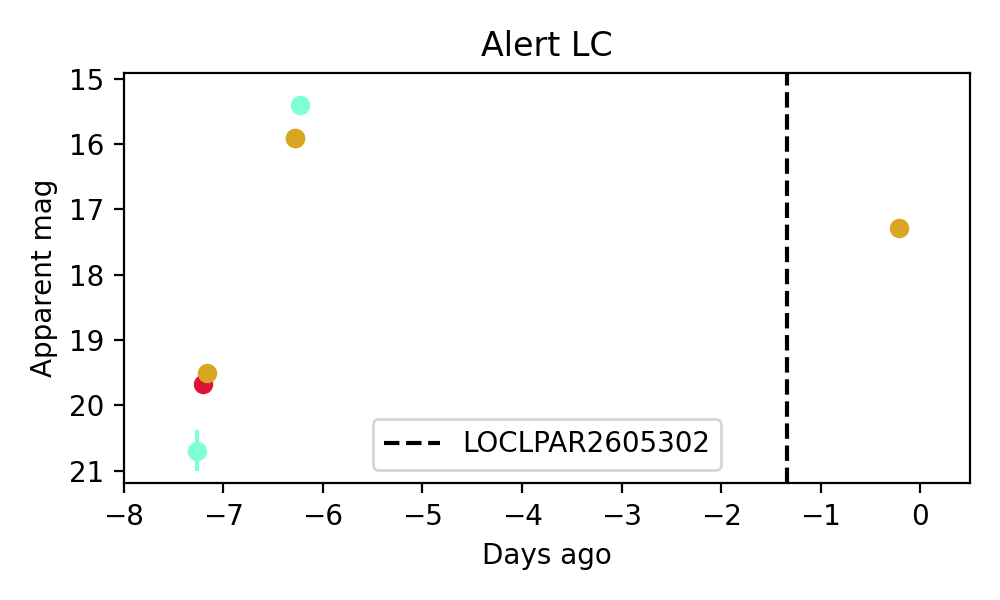
Consistent with synchrotron, g-r>0!
1. ZTF26aayjvoz (Afterglow?FBOT?) [Back to Top] [Share] [Trigger Swift] [Fritz ] [Lasair ]RA, Dec: 296.01972, 84.74581 19h44m4.73s, 84d44m44.91sGalactic (l, b): 117.24705, 25.8179 ext(g-r) = 0.152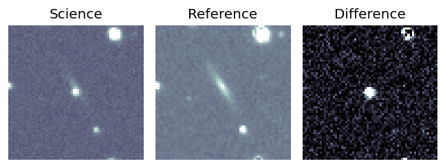
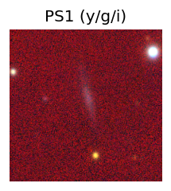
PS1: 1 source in 3 arcsec Closest: d = 1.88 arcsec photoz=0.10+/-0.01 peak abs mag = -21.36 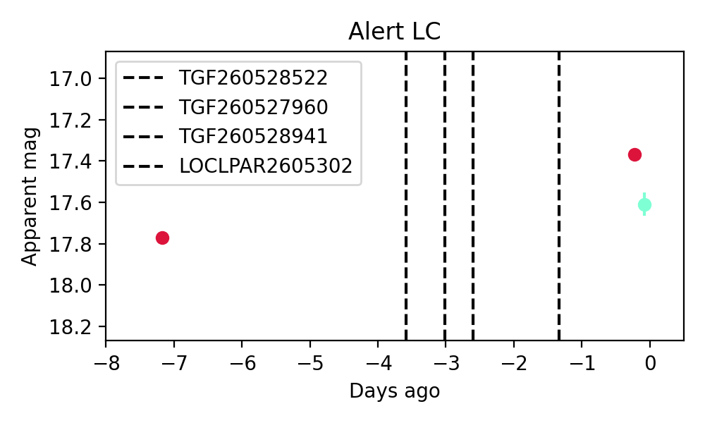
Consistent with synchrotron, g-r>0!
2. ZTF26aaypnjr (Afterglow?) [Back to Top] [Share] [Trigger Swift] [Fritz ] [Lasair ]RA, Dec: 247.61985, 53.88093 16h30m28.76s, 53d52m51.36sGalactic (l, b): 82.43895, 42.14766 ext(g-r) = 0.015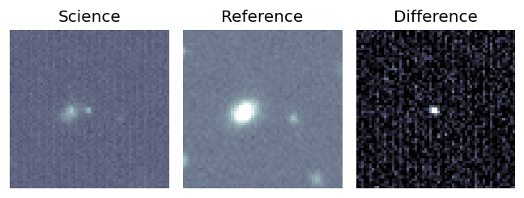
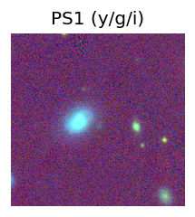
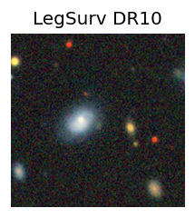
peak abs mag = -16.64 PS1: 1 source in 3 arcsec Closest: d = 6.70 arcsec photoz=0.07+/-0.01 peak abs mag = -18.81 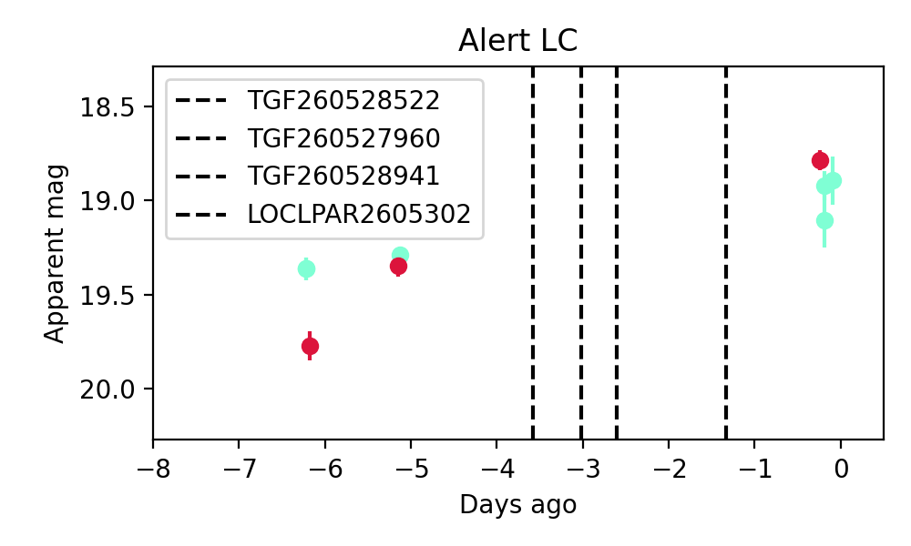
Consistent with synchrotron, g-r>0!
3. ZTF26aaysega (FBOT?) [Back to Top] [Share] [Trigger Swift] [Fritz ] [Lasair ]RA, Dec: 324.41975, -1.72324 21h37m40.74s, -1d-43m-23.67sGalactic (l, b): 53.16039, -37.14757 ext(g-r) = 0.057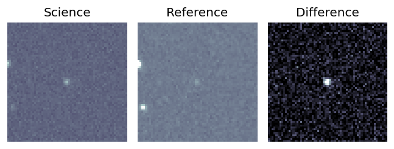
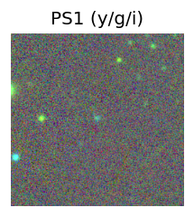
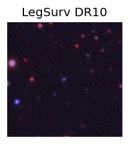
peak abs mag = -25.16 LegacySurvey: 1 sources in 3 arcsec Closest: d = 0.48 arcsec, 105.7 deg (east of north) photoz=0.07 (68% bounds 0.04, 0.11), type=REX peak abs mag = -18.75 (68% bounds -17.12, -19.6) 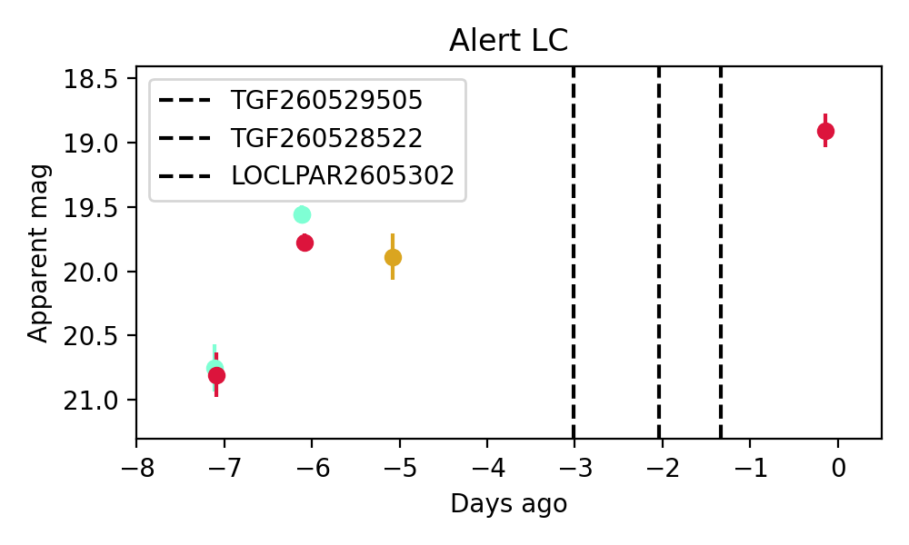
4. ZTF26aaysvom (FBOT?) [Back to Top] [Share] [Trigger Swift] [Fritz ] [Lasair ]RA, Dec: 277.45017, 50.05245 18h29m48.04s, 50d 3m8.80sGalactic (l, b): 78.61677, 23.79356 ext(g-r) = 0.057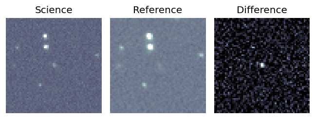
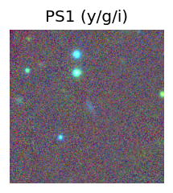
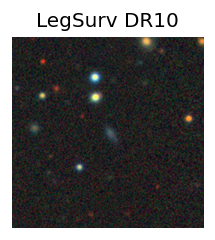
PS1: 1 source in 3 arcsec Closest: d = 1.13 arcsec photoz=0.62+/-0.39 peak abs mag = -24.44 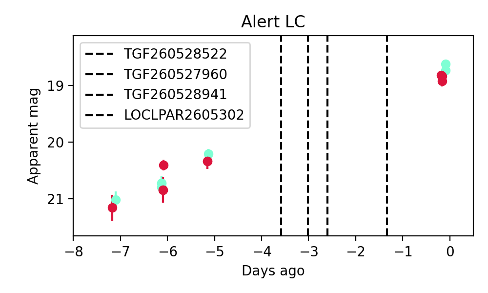
5. ZTF26aaytums (FBOT?) [Back to Top] [Share] [Trigger Swift] [Fritz ] [Lasair ]RA, Dec: 277.84229, 2.98505 18h31m22.15s, 2d59m6.16sGalactic (l, b): 33.30758, 5.82403 ext(g-r) = 0.944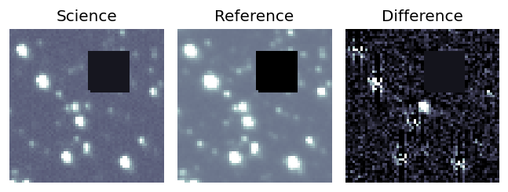
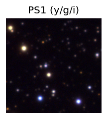
PS1: 1 source in 3 arcsec Closest: d = 0.68 arcsec photoz=0.71+/-0.09 peak abs mag = -26.47 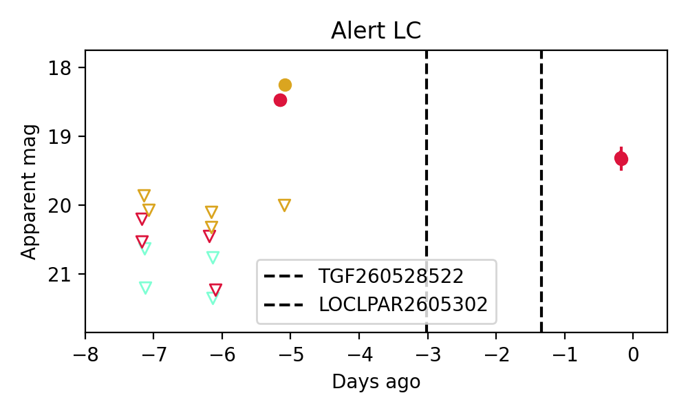
6. ZTF26aaywqgz (FBOT?) [Back to Top] [Share] [Trigger Swift] [Fritz ] [Lasair ]RA, Dec: 195.38423, 53.42007 13h 1m32.22s, 53d25m12.25sGalactic (l, b): 119.54216, 63.64166 ext(g-r) = 0.013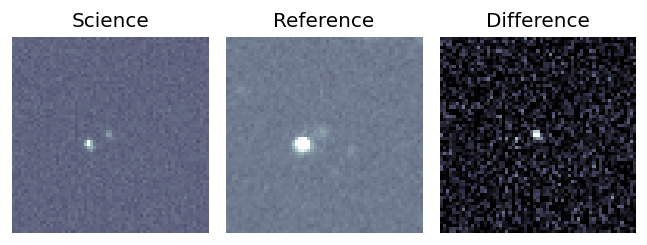
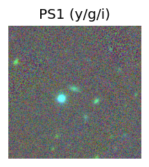
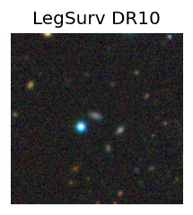
peak abs mag = -22.07 PS1: 1 source in 3 arcsec Closest: d = 1.04 arcsec photoz=0.16+/-0.14 peak abs mag = -20.18 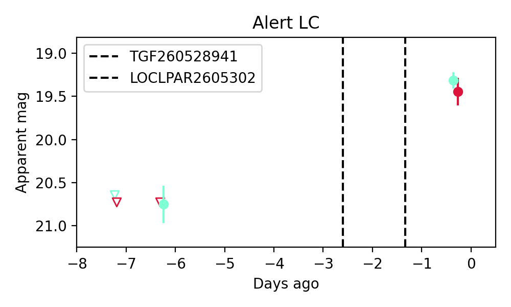
Consistent with synchrotron, g-r>0!
7. ZTF26aayyhxm (FBOT?) [Back to Top] [Share] [Trigger Swift] [Fritz ] [Lasair ]RA, Dec: 233.0757, 40.0029 15h32m18.17s, 40d 0m10.43sGalactic (l, b): 64.6251, 54.45954 ext(g-r) = 0.024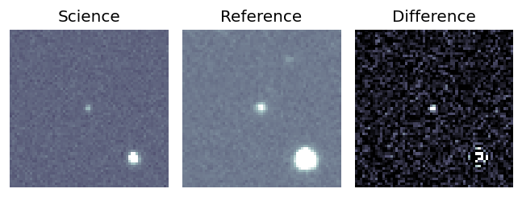
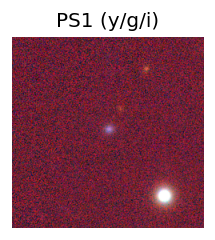
peak abs mag = -18.70 PS1: 1 source in 3 arcsec Closest: d = 0.53 arcsec photoz=0.14+/-0.09 peak abs mag = -19.78 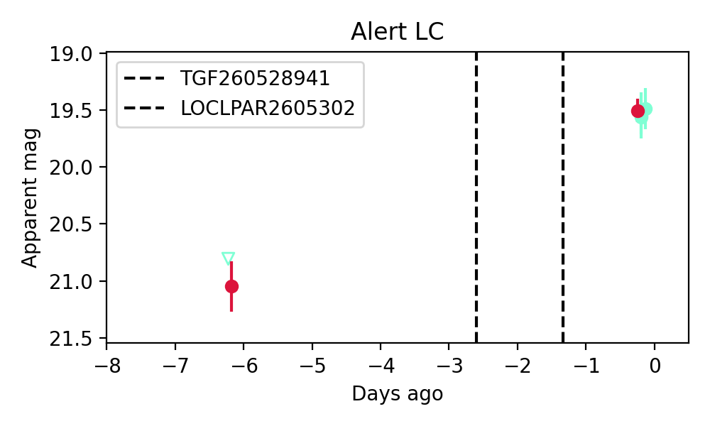
Consistent with synchrotron, g-r>0!
8. ZTF26aayymar (FBOT?) [Back to Top] [Share] [Trigger Swift] [Fritz ] [Lasair ]RA, Dec: 234.93656, 3.11171 15h39m44.77s, 3d 6m42.15sGalactic (l, b): 9.52633, 43.1858 ext(g-r) = 0.064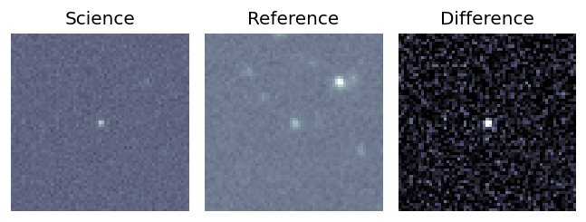
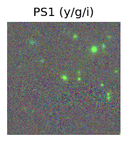
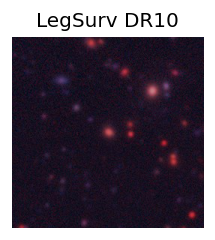
peak abs mag = -23.60 LegacySurvey: 1 sources in 3 arcsec Closest: d = 0.35 arcsec, 255.8 deg (east of north) photoz=0.49 (68% bounds 0.42, 0.53), type=SER peak abs mag = -23.68 (68% bounds -23.29, -23.9) 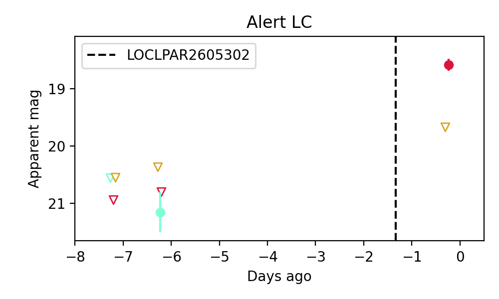
9. ZTF26aayyokk (FBOT?) [Back to Top] [Share] [Trigger Swift] [Fritz ] [Lasair ]RA, Dec: 243.03816, 29.91421 16h12m9.16s, 29d54m51.14sGalactic (l, b): 48.91925, 46.17125 ext(g-r) = 0.035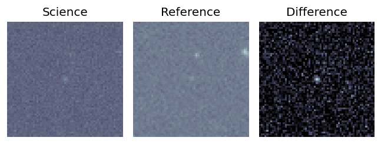
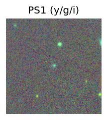
peak abs mag = -21.47 LegacySurvey: 1 sources in 3 arcsec Closest: d = 0.16 arcsec, 263.3 deg (east of north) photoz=0.19 (68% bounds 0.15, 0.28), type=REX peak abs mag = -20.31 (68% bounds -19.76, -21.2) 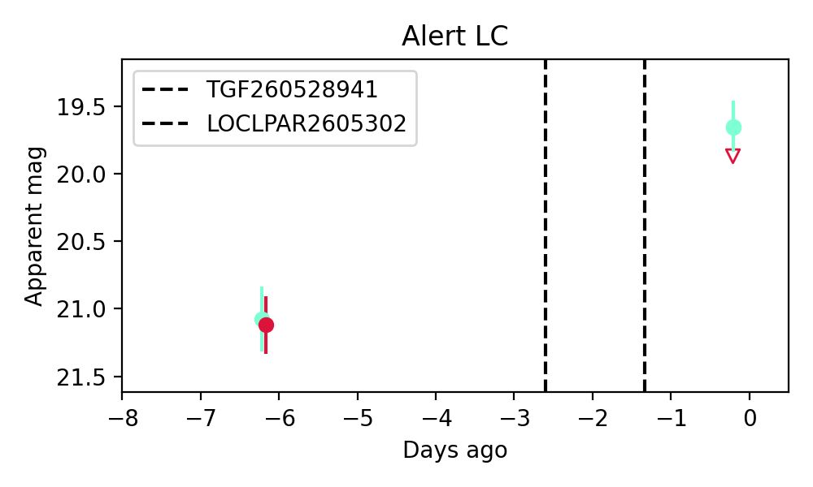